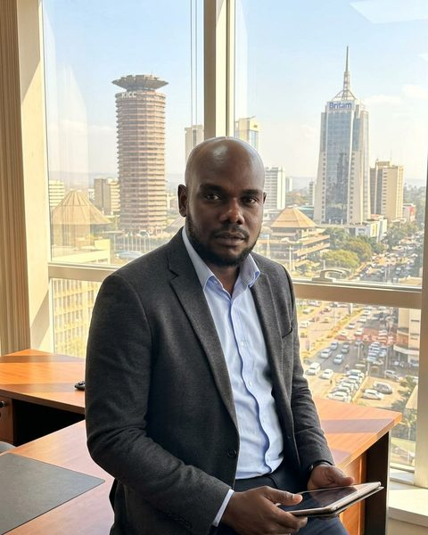
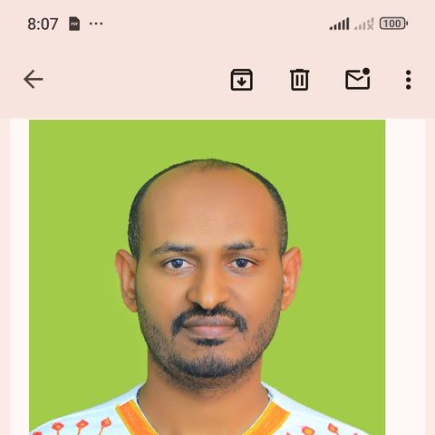

A world where every public health laboratory — regardless of the resources around it — is trusted to deliver results that protect lives, inform research, and hold up to international scrutiny.
To strengthen public health laboratory systems across Africa and beyond through hands-on, evidence-based consulting — built by someone who has run these laboratories himself, not just advised on them from a distance.

Godfrey Tuda Otieno is a public health laboratory systems specialist with over 25 years of hands-on experience leading clinical laboratory operations, vaccine trial research, and quality systems across Sub-Saharan Africa. As Section Head of the STAT Laboratory at the KEMRI-Wellcome Trust Research Programme in Kilifi for 16 years, and as operational and technical lead for LSHTM's multi-site Ebola vaccine research program in Sierra Leone, he has built the laboratory backbone behind research now published in The Lancet Infectious Diseases and the New England Journal of Medicine.
His work spans Ministries of Health, WHO-aligned partners, and global research institutions — including the London School of Hygiene & Tropical Medicine (LSHTM) and KEMRI-Wellcome Trust — alongside collaborations with globally recognized researchers such as Prof. Mike English, Prof. Kathryn Maitland, Prof. Kevin Marsh, and Prof. Jay Berkley.
He founded GT Consultancy to make this expertise directly available to governments, NGOs, and clinical trial sponsors who need laboratory systems that hold up to international standards — built by someone who has done the work himself, not just advised on it from a distance.

Laboratory operations in the field — where these systems are actually put to work
GT Consultancy is led and advised by a small, deliberately chosen team — real specialists, each contributing a distinct capability.
25+ years strengthening public health laboratory systems across Africa. Sets GT Consultancy's strategic direction and leads every engagement personally.

Technology & Digital Systems AdvisorFounder & CTO, Hub31 — provides the technology infrastructure and digital systems behind GT Consultancy's operations.
Clinical research professional with 5+ years supporting vaccine trials, pharmacovigilance, and regulatory compliance in resource-limited settings.

Veterinary Epidemiology & One Health AdvisorAssociate Professor, University of Gondar — specializing in vaccinology, zoonotic disease prevention, and One Health approaches to public health.
GT Consultancy also draws on a wider network of specialist collaborators across clinical research and public health.